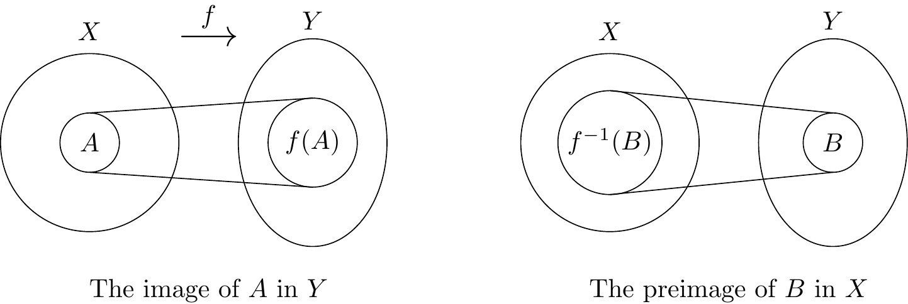

As we mentioned at the outset, abstract algebra is concerned with ‘structure’ rather than ‘content’; it studies generalised properties of mathematical structures rather than the components of those structures. In this chapter we examine functions that preserve structure and allow us to decide when two structures are ‘essentially the same’. We will begin with the latter.
5.1 Group Isomorphisms
Let \(G_1\) be the group formed by \(\{1, -1, i, -i \}\) under multiplication and \(G_2\) be the subgroup of the group of symmetries of a square generated by \(r_1\), an anticlockwise rotation of \(\pi/2\) radians; thus \(G_2\) is the group \((\{ e, r_1, r_2, r_3 \}, \circ)\) where the operation is function composition. These two groups produce the following operation tables:
These groups are ‘essentially the same’. To see this, in the first table, replace 1 by \(e\), \(-1\) by \(r_2\), \(i\) by \(r_1\) and \(-i\) by \(r_3\). What we get is the second table re-ordered slightly:
The fact that when we replace the elements in the first table with their image under \(\theta\) gives a rearrangement of the second table is captured precisely by the fact that for all \(x,y \in G_1\), \(\theta(x \times y) = \theta(x) \circ \theta(y)\).
Definition 5.1 (Isomorphism) Let \((G_1, *)\) and \((G_2, \odot)\) be groups. Then \((G_1, *)\) and \((G_2, \odot)\) are isomorphic if and only if there exists a mapping \(\theta : G_1 \rightarrow G_2\) (called an isomorphism) such that:
\(\theta\) is bijective (i.e. both injective and surjective);
Notice that for any group, \(G\), the identity mapping is an isomorphism from \(G\) to itself. Also, if \(\theta\) is an isomorphism from \(G_1\) to \(G_2\), then \(\theta^{-1}\) is an isomorphism from \(G_2\) to \(G_1\) (we therefore talk about groups being isomorphic to each other). Furthermore, if \(\theta\) is an isomorphism from \(G_1\) to \(G_2\) and \(\phi\) is an isomorphism from \(G_2\) to \(G_3\), then \(\phi \circ \theta\) is an isomorphism from \(G_1\) to \(G_3\).
Notationally, if \(\theta : G_1 \rightarrow G_2\) is an isomorphism, we say that \(G_1\) and \(G_2\) are isomorphic and write \(G_1 \cong G_2\).
How do we show that two groups \((G_1, *)\) and \((G_2, \odot)\) are isomorphic? For small groups we can use trial and error, but for large groups, and certainly for infinite groups, we need a different approach.
Step 1:
Find a candidate function \(\theta: G_1 \to G_2\).
Step 2:
Show that \(\theta\) is injective. That is, we show that for any pair \(a,b \in G_1\) such that \(\theta(a) = \theta(b)\) then \(a=b\).
Step 3:
Show that \(\theta\) is surjective. That is, we show that given \(x \in G_2\) there is an element \(a \in G_1\), such that \(\theta(a) = x\).
Step 4:
Step 2 and Step 3 above establish the fact that \(\theta\) is a bijection. To show that \(\theta\) is an homomorphism, we lastly need to verify that for all \(a,b \in G_1\), \[\theta(a \ast b) = \theta(a) \odot \theta(b).\]
Example 5.1 (Examples of isomorphic infinite groups)
\((\R, +)\) is isomorphic to \((\R^{+}, \times)\).
Solution:
Step 1:
Define \(\theta: \R \to \R^{+}\) by \(\theta(x) = e^{x}\). Notice that \(e^x \in \R^{+}\) for all \(x \in \R\).
Step 2:
Let \(a,b \in \R\) and suppose that \(\e^{a} = \e^{b}\). Taking logs, we get that \(a = b\). So \(\theta\) is injective.
Step 3:
Let \(x \in \R^{+}\). Then since \(x>0\), \(\ln(x)\) is an element of \(\R\). Observe that \(e^{\ln(x)} = x\). Therefore, \(\theta\) is surjective.
Step 4:
Let \(a,b \in \R\) be arbitrary. We have \[\theta(a+b) = \e^{a+b} = \e^{a}\times\e^{b} =\theta(a) \times \theta(b).\]
We conclude that \(\theta\) is an isomorphism and so \((\R,+) \cong (\R^{+},\times)\).
\((\Z, +)\) is isomorphic to \((2\Z, +)\).
Solution:
Step 1:
Define \(\theta: \Z \to 2\Z\) by \(\theta(n) = 2n\).
Step 2:
Let \(m,n \in \Z\) and suppose that \(\theta(m) = \theta(n)\). Then \(2m = 2n\) which means that \(m = n\). Therefore \(\theta\) is injective.
Step 3:
Let \(k \in 2\Z\). Then \(k = 2m\) for some \(m \in \Z\). It follows that \(\theta(m) = 2m =k\). Therefore \(\theta\) is surjective.
Step 4:
Let \(m,n \in \Z\). We have \[\theta(m+n) = 2(m+n) = 2m + 2n = \theta(m)+ \theta(n).\]
How do we show that two groups \((G_1, *)\) and \((G_2, \odot)\) are not isomorphic? This would mean that there is no bijective function from \(G_1\) to \(G_2\) such that \(\theta (x*y) = \theta (x) \odot \theta (y)\), for all \(x, y \in G_1\). In general we cannot try all possible bijections unless, of course, none exist, for example when \(G_1\) and \(G_2\) have different orders.
Example 5.2 The group of symmetries of an equilateral triangle is not isomorphic to the group \((\{1, -1, i, -i \}, \times)\). There are six elements in \(D_3\) so there is no bijection from \(D_3\) to \(\{1, -1, i, -i \}\) (and hence no isomorphism).
We say that the order of a group is preserved by isomorphism. The following lemma provides more such properties and these are frequently helpful in showing that two groups are not isomorphic, or in spotting an isomorphism if there is one.
Lemma 5.1 Let \((G_1, *)\) and \((G_2, \odot)\) be groups and \(\theta : G_1 \rightarrow G_2\) an isomorphism. Then:
if \(e\) is the identity in \((G_1, *)\), then \(\theta(e)\) is the identity in \((G_2, \odot)\);
for all \(x \in G_1\), \(\theta(x^{-1}) = (\theta(x))^{-1}\);
for all \(x \in G_1\), \(x\) and \(\theta(x)\) have the same period;
\((G_1, *)\) is abelian if and only if \((G_2, \odot)\) is abelian;
if \(H\) is a subgroup of \(G_1\), then \(\theta(H) = \{ \theta(h) \, | \, h \in H \}\) is a subgroup of \(G_2\).
Proof. We take each in turn.
Observe that \[\theta(e) = \theta(e \ast e) = \theta(e) \odot \theta(e).\] Multiplying on both sides by \(\theta(e)^{-1}\) give the result.
Let \(x \in G_1\). Then \[\theta(e) = \theta(x \ast x^{-1}) = \theta(x) \odot \theta(x^{-1})\]. Since \(\theta(e)\) is the identity element of \(G_2\), it follows by Corollary 3.1 that \((\theta(x))^{-1} = \theta(x^{-1}).\)
Let \(x \in G_1\). We first establish by induction that \(\theta(x^{i}) = (\theta(x))^{i}\) for all \(i \in \N\).
base case:
This occurs when \(i = 0\). In this case \[\theta(x^{0}) = \theta(e) = (\theta(x))^{0}\] since \(\theta(e)\) is the identity element of \(G_2\).
inductive hypothesis:
Assume that \(\theta(x^{j}) = (\theta(x))^{j}\) for all \(j \in N\) with \(j < i\).
inductive step:
We consider \(\theta(x^{i})\). We have \[\theta(x^{i}) = \theta(x\ast x^{i-1}) = \theta(x)\odot\theta(x^{i-1}) = \theta(x)\odot(\theta(x))^{i-1} = (\theta(x))^{i}.\]
Now we consider two cases.
Firstly that \(x\) has infinite period. Suppose \((\theta(x))^{i} = \theta(e)\) for some \(i \in \Z^{+}\). This means, by the preceding, that \(\theta(x^{i}) = \theta(e)\). However, \(\theta\) is a bijection, and so it is injective, it follows that \(x^{i} = e\). This is a contradiction. We conclude that \((\theta(x))^{i}\) is not the identity element of \(G_2\) for any \(i \in \Z^{+}\) — \(\theta(x)\) also has infinite order.
Now suppose that \(x\) has period \(m\). We observe that \[(\theta(x))^{m} = \theta(x^{m}) = \theta(e)\] and so the period of \(\theta(x)\) is at most \(m\). However, if \((\theta(x))^{l}\) is not the identity element of \(G_2\) for any \(0 \le l <m\), since, as in the previous case, this will mean that \(\theta(x^{l}) = \theta(e)\) and so \(x^{l} = e\) which is not possible.
(\(\rightarrow\)):
Suppose that \((G, \ast)\) is abelian. Let \(x,y \in G_2\) be arbitrary. There are elements \(a,b \in G_1\) such that \(\theta(a) = x\) and \(\theta(b) = y\). Now observe \[\begin{eqnarray*}
x \odot y &=& \theta(a) \odot \theta(b)\\
&=& \theta(a \ast b) \\
&=& \theta(b \ast a) \\
&=& \theta(b) \ast \theta(a) \\
&=& y \odot x.
\end{eqnarray*}\]
We conclude that \(x \odot y = y \odot x\) for all \(x,y \in G_2\).
(\(\leftarrow\)):
Suppose that \((G_2, \odot)\) is abelian. Let \(a,b \in G_1\). Since \(\theta\) is a bijection, we can find \(x,y \in G_2\) such that \(a = \theta(x)\) and \(b = \theta(y)\). Now observe that \[\begin{eqnarray*}
a \ast b &=& \theta^{-1}(\theta((a\ast b )\\
&=& \theta^{-1}(theta(a) \odot \theta(b)) \\
&=& \theta^{-1}(\theta(b) \odot \theta(a)) \\
&=& \theta^{-1}(\theta(b\ast a)) \\
&=& b \ast a.
\end{eqnarray*}\] Therefore, \(a \ast b = b \ast a\) for all \(a,b \in G_1\) and \((G_1, \ast)\) is abelian.
We apply The Subgroup Test to \(\theta(H)\). Clearly \(\theta(H)\) is non-empty as it contains \(\theta(e)\) (\(e \in H\).)
Closure:
Let \(h_1,h_2 \in H\). We want to show that \(\theta(h_1) \odot \theta(h_2) \in \theta(H)\). We have: \[\begin{equation*}
\theta(h_1) \odot \theta(h_2) = \theta(h_1 \ast h_2).
\end{equation*}\]
Let \(h_1 \in H\). Then, by part ii. \((\theta(h_1))^{-1} = \theta(h_1^{-1})\). Since \(h_1 \in H\), and \(H\) is a subgroup of \((G, \ast)\), then \(h_1^{-1} \in H\) and \((\theta(h_1))^{-1} \in \theta(H)\).
One of the major questions in the study of groups is, for a given positive integer \(n\), what are the groups of order \(n\) up to isomorphism? What we mean by this is, can we describe a set of isomorphically distinct groups of order \(n\) which is complete in the sense that every group of order \(n\) is isomorphic to a member of this set? We will show that the answer is easy to describe for abelian groups, but the answer for non-abelian groups required many years of research (and, arguably, has yet to be completed). Below we give a complete list of isomorphically distinct groups of order less than eight. We have already seen \(\Z_n\) as the canonical form of a cyclic group of order \(n\), generated by the element 1; we shall study groups of the type \(\Z_m \times \Z_n\) in Chapter 7.
Note that \(\Z_2 \times \Z_2\) is the smallest non-cyclic group and \(D_3\) the smallest non-abelian group.
There are five isomorphically distinct groups of order 8; three of these are abelian, namely \(\Z_8\), \(\Z_2 \times \Z_4\) and \(\Z_2 \times \Z_2 \times \Z_2\) (spotting a pattern?) and two are non-abelian, namely \(D_4\) and the quaternion group \(Q_8\).
Observe, also, that so far we only have one group of order \(n\) when \(n\) is prime; this is a consequence of the following result combined with the fact that, by Theorem 4.2, a group of prime order is necessarily cyclic.
We now state and prove an extremely important and useful result:
Theorem 5.1 Two cyclic groups of the same order are isomorphic.
Proof.
Let \(G_1 = \gen{a}\) and \(G_2 = \gen{b}\) be cyclic groups of the same order. Define a map \(\theta: G_1 \to G_2\) by \(\theta(a^{i}) = b^{i}\) for all \(i \in \Z\)
Clearly \(\theta\) is surjective since \(G_2 = \{b^{i} : i \in \Z\}\).
Suppose \(\theta(a^{i}) = \theta(a^{j})\) for \(i,j \in \Z\). Then \(b^{i} = b^{j}\). Therefore, \(b^{i-j} = e_{G_{2}}\). This only happens if \(b\) has finite period \(m\) such that \(m| (i-j)\). In this case there is a \(k \in \Z\) such that \(i = j+ km\). Now, since the period of \(a\) and \(b\) are equal, we must have that \[a^{i} = a^{j+km} = a^{j}(a^{m})^{k} = a^{j}e_{G_{1}} = a^{j}.\] We conclude that \(\theta\) is injective.
Therefore \(\theta\) is an isomorphism and \(G_1 \cong G_2\).
Example 5.3 We have shown that the set \[M=
\left\{\left(\begin{array}{cc}a&b\\-b&a\end{array}\right)
\in\R_{2\times 2}:a,b\mbox{ not both zero}\right\},\] forms a subgroup of GL\((2, \R)\) under matrix multiplication. Show that \(M\) is isomorphic to \((\C \backslash \{0\}, \times)\).
Solution:
Step 1:
Define a map \(\theta: M \to \C \backslash\{0\}\) by \[\theta\left( \begin{pmatrix}a & b \\ -b & a\end{pmatrix}\right) = a+ib.\] Since \(a\) and \(b\) are not both zero, it is clear that \(a+ib \ne 0\).
Step 2:
We show that \(\theta\) is injective. Let \[A = \begin{pmatrix}a & b \\ -b & a\end{pmatrix} \text{ and } C=\begin{pmatrix}c & d \\ -d & c\end{pmatrix} \in M.\] Suppose that \(\theta(A) = \theta(C)\). Then \(a+ib = c + id\). This is only possible if \(a=c\) and \(b=c\). This means that \(A=C\). It follows that \(\theta\) is injective.
Step3:
We show that \(\theta\) is surjective. Let \(a+ib \in \C\backslash\{0\}\). Notice that since \(a+ib \ne 0\), then \(a\) and \(b\) are not both zero. Therefore \[A= \begin{pmatrix}a & b \\ -b & a\end{pmatrix} \in M.\] Moreover, \(\theta(A) = a+ib\).
Step 4:
Let \[A = \begin{pmatrix}a & b \\ -b & a\end{pmatrix}\] and \[C = \begin{pmatrix}c & d \\ -d & c\end{pmatrix}\] be elements of \(M\). Then \[\begin{eqnarray*}
\theta(AC) &=& \theta\left(\begin{pmatrix}ac - bd & ad+bc \\ -(ad+bc) & ac-bd\end{pmatrix}\right) \\ &=& (ac-bd) + i(ad+ab) \\ &=& (a+ib) (c+id) \\ &=& \theta(A)\theta(C).
\end{eqnarray*}\]
It follows that \(\theta: (M, \times) \to (\C \backslash\{0\},\times)\) is an isomorphism and so \((M,\times) \cong (\C \backslash\{0\},\times)\).
Example 5.4 How do you know that the group represented by the following operation table must be isomorphic to \(\Z_6\)? Find an isomorphism between the two groups.
Solution:
If the group represented by the table is isomorphic to \(\Z_6\), then it must have an element of order \(6\). Notice that \(a\) has to be the identity element since \(a \ast x = x\) for all \(x \in \{a,b,c,d,e,f\}\). We can now work through the elements in turn to see which have order \(6\). For \(b\) we observe that \[b^2 = c, \ b^3 = bc =f,\ b^4 = bf=e,\ b^5 = be=d,\ b^6 = bd =a.\]
Therefore \(b\) has order \(6\). Following the proof of Theorem 5.1, the map \(\theta: \gen{b} \to \Z_{6}\) by \(b^{i} = i\) for all \(0 \le i \le 5\) is an isomorphism.
5.2 Group Homomorphisms
As we mentioned at the beginning of the chapter, we are interested in functions that preserve structure. Such functions are called homomorphisms. We begin with a definition.
Definition 5.2 (Homomorphism) Let \((G_1, *)\) and \((G_2, \circ)\) be groups. A mapping \(\phi:G_1 \rightarrow G_2\) is a (group) homomorphism if and only if for all \(x, y \in G_1\)\[\phi(x*y) = \phi(x) \circ \phi(y).\]
Note that an isomorphism is precisely a bijective homomorphism.
Example 5.5 (Positive and Negative examples)
\(G_1=G_2=(\R, +), \; \phi(x)=|x|, \; \forall \, x \in \R\).
This map is not a homomorphism. Consider \(-2,3 \in \R\), \[\phi(3+(-1)) = \phi(2) = |2| \ne 4 = |3| + |-1| = \phi(3) + \phi(-1).\]
\(G_1=G_2=(\rwz, \times), \; \phi(x)=|x|, \; \forall \, x \in \rwz\).
This map is a homomorphism. Let \(x,y \in \rwz\). Then \[\phi(xy) = |xy| = |x||y| = \phi(x)\phi(y).\] Note that \(\phi\) is not an isomorphism since it is not a bijection.
\(G_1= GL(2, \R), G_2=(\rwz, \times), \; \phi(A)=\text{det}\, A, \; \forall \, A \in GL(2, \R)\).
This map is a homomorphism. Let \(A,B \in G_1\). Then, \[\phi(AB)=\det AB = \det A \det B = \phi(A)\phi(B).\] Note that \(\phi\) is not an isomorphism. There are infinitely many elements of \(G_1\) with determinant equal to \(1\) for example.
Example 5.6 Consider the function \(f : \C \backslash \{0\} \rightarrow \R \backslash \{0\}\) defined by \[\forall \, a, b \in \R, \quad f(a + ib) = a^2 + b^2.\] Establish whether \(f\) is a homomorphism, and whether it is an isomorphism, from \((\C \backslash \{0\}, \times)\) to \((\R \backslash \{0\}, \times)\).
It follows that \(f\) is a homomorphism. Note that \(f\) is not an isomorphism since it is not a bijection. Indeed \(f\) is not surjective since there is no \(z \in \cwz\) such that \(f(z) = -1\) for example.
Example 5.7 Let \((G_1,\circ)\) and \((G_2,*)\) be groups and \(\theta:G_1 \rightarrow G_2\) be a surjective homomorphism. For each of the following statements, either prove that it is true or provide a counter-example.
If \((G_1,\circ)\) is abelian, then \((G_2,*)\) is abelian.
If \((G_2, *)\) is abelian, then \((G_1,\circ)\) abelian.
What goes wrong?
What is wrong with the following argument: Let \(a,b \in G_1\). Then: \[\begin{eqnarray*}
\theta(a \circ b) &=& \theta(a) \ast \theta(b) \\
&=& \theta(b) \ast \theta(a) \\
&=& \theta(b \circ a).
\end{eqnarray*}\]
Thus, \(\theta(a \circ b) = \theta(b \circ a)\) and so \(a \circ b = b \circ a\) for all \(a, b \in G_1\).
This argument does not work because \(\theta\) might not necessarily be injective and so we cannot conclude that \(a \circ b = b \circ a\).
Solution:
This statement is true. Let \(x,y \in G_2\). Since \(\theta\) is surjective, there are \(a,b \in G_1\) such that \(\theta(a) = x\) and \(\theta(b) =y\). We now have: \[\begin{eqnarray*}
x \ast y &=& \theta(a) \ast \theta(b) \\
&=& \theta(a \circ b) \\
&=& \theta(b \circ a) \\
&=& \theta(b)\circ \theta(a) \\
&=& y \ast x.
\end{eqnarray*}\]
Therefore \(x \ast y = y \ast x\) for all \(x,y \in G_2\).
This statement is false. Indeed we have already seen a counter example. The map \(\mathrm{det}: GL(2,\R) \to \rwz\) is a homomorphism, however \(GL(2,\R)\) is a non-abelian group.
As we have said, a homomorphism is a structure-preserving mapping. If \(\phi\) is a homomorphism from a group \(G\) into a group \(\gp\), then we can get information about the structural properties of \(\gp\) from the structural properties of \(G\). An example of this is provided by the following lemma:
Lemma 5.2 Let \(\phi\) be a homomorphism from a group \(G\) to a group \(\gp\). Then,
if \(e\) is the identity in \(G\), then \(\phi(e)\) is the identity in \(\gp\),
for all \(x \in G\), \(\phi(x^{-1})=(\phi(x))^{-1}\).
Proof.
We have \[\phi(e) = \phi(ee) = \phi(e)\phi(e).\] It follows that \(\phi(e)\) must be the identity element of \(\gp\) by cancelling.
Let \(x \in G\). We have, \[\phi(e) = \phi(xx^{-1}) = \phi(x)\phi(x^{-1}).\] We conclude that \(\phi(x) = (\phi(x))^{-1}\).
In the case of an isomorphism, the bijectivity of the function means that we preserve not only the structure but also the ‘size’, in the sense that isomorphic groups must have the same order. It is natural in the case of non-bijective homomorphisms, therefore, to investigate how structure is preserved between groups of different orders; that is, to investigate how the function ‘scales’ the structure that it preserves. A very loose analogy would be to consider a map of England, say, but being careful how the word ‘map’ is used. One possible scaling would be to map everything to a single point; small enough to fit in your pocket, totally useless, but still a map! Alternatively one could use a scale of 1:1 which would make the map an exact replica in terms of size, but again the utility of such a map is open to doubt. In practical terms we need something that scales down the original to a usable size. Using this as an analogy, where the ‘scaling factor’ is represented by our group homomorphism, the first case would be tantamount to mapping everything in \(G\) onto just one element of \(\gp\), whereas the second case would represent an isomorphism. So, what about something in between? First, we make the following definitions.
Definition 5.3 (Image and Preimage) Let \(f\) be a mapping of a set \(X\) into a set \(Y\), and let \(A \subseteq X\) and \(B \subseteq Y\) The image of \(A\) under \(f\), which is a subset of \(Y\), is denoted and defined by \[f(A) = \{f(a) \where a \in A \}.\] The preimage of \(B\) under \(f\), which is a subset of \(X\), is denoted and defined by \[f^{-1}(B) = \{ x \in X \where f(x) \in B \}.\]

The first observation to make at this juncture is that the image of a group under a group homomorphism is a group. This follows if \(H=G\) in the theorem below.
Theorem 5.2 Let \(\phi\) be a group homomorphism from \(G\) into \(\gp\). Then, for any subgroup \(H\) of \(G\), \(\phi(H)\) is a subgroup of \(\gp\).
Proof.
We carry out the Subgroup Test on \(\phi(H)\). We note that \(\phi(H)\) is non-empty as it contains \(\phi(e)\) the identity element of \(\gp\).
Let \(a,b \in H\). We want to show that \(\phi(a)\phi(b)\) is en element of \(\phi(H)\). Observe that: \[\phi(ab) = \phi(a)\phi(b).\] Since \(ab \in H\), it follows that \(\phi(ab) \in \phi(H)\) and so \(\phi(a)\phi(b) \in \phi(H)\) as required.
Let \(a \in H\). We want to show that \((\phi(a))^{-1} \in \phi(H)\). However, \(\phi(a^{-1}) = (\phi(a))^{-1}\). Since \(a^{-1} \in H\), we conclude that \((\phi(a))^{-1} \in \phi(H)\) as required.
If we are to continue our analogy, we need to consider a suitable ‘scaling’ factor. Suppose we consider the set of elements of \(G\) that map onto the identity in \(\gp\) under some homomorphism \(\phi\). This leads to the following formal definition:
Definition 5.4 (Kernel) Let \(\phi\) be a group homomorphism from a group \(G\) into a group \(\gp\) and \(e^{\prime}\) be the identity in \(\gp\). The kernel of \(\phi\) is denoted and defined by \[\krn (\phi) = \{ x \in G \where \phi(x)=e^{\prime}\}.\]
Example 5.8
Let \(\phi: \Z \to \Z_2\) be defined by \[ \phi(n) = \begin{cases} 0 & \text{ if } n \text{ is even, } \\ 1 & \text{ if } n \text{ is odd. } \end{cases}\] Then \(\phi\) is a homomorphism and \(\krn(\phi) = 2\Z\).
Example 5.9
Let \(\phi: GL(2,\R) \to \R\backslash\{0\}\) by \(\phi(A) = \det(A)\). Then \(\phi\) is a homomorphism and \(\krn(\phi) = \{A \in GL(2,\R) \mid \det(A) = 1\}\).
Example 5.10
Let \(G= \Z_6\) and \(G'\) be the subgroup \(\gen{r_1} = \gen{r_2} = \{e,r_1,r_2\}\) of \(D_3\).
Define \(\phi: G \to G'\) by \(\phi(n) = r_1^{n}\). Then \(\phi\) is a homomorphism (check this as an exercise). Looking at the image of \(\phi\) we have: \[\begin{eqnarray*}
\phi(0) &=& e \\
\phi(1) &=& r_1 \\
\phi(2) &=& r_2 \\
\phi(3) &=& e \\
\phi(4) &=& r_1 \\
\phi(5) &=& r_2.
\end{eqnarray*}\]
It follows that \(\krn(\phi) = \{0,3\}\). Observe that \(\krn(\phi) = \gen{3}\) and so \(\krn(\phi)\) is a subgroup of \(\Z_{6}\).
What can we say about the kernel of a homomorphism? Actually, quite a lot, and such matters will be studied in detail in the Year 3 Group Theory module. For the moment, though, we shall restrict our attention to two properties.
Theorem 5.3 Let \(\phi\) be a group homomorphism from \(G\) into \(\gp\). Then, \(\krn (\phi)\) is a subgroup of \(G\).
Proof.
Notice that \(\krn(\phi)\) is a non-empty subset of \(G\) since it contains the identity element of \(G\) (\(\phi(e) = e'\) where \(e'\) is the identity element of \(G'\)).
It follows that \(\krn(\phi)\) is a subgroup of \(G\).
In fact, the kernel of a homomorphism is more than a mere subgroup of the domain; it is what is known as a normal subgroup, which is characterised by the property that its left and right cosets coincide (again, more of normal subgroups next year).
For the second property we need to revisit the example above where we had a homomorphism mapping from \(\Z_6\) to the subgroup of \(D_3\) containing the identity and the rotations \(r_1\) and \(r_2\). Consider the sizes of the sets involved….
Size of set
Description
\(|\Z_6| = 6\)
Domain of \(\phi\)
\(|\{e,r_1,r_2\}|=3\)
Image of \(\phi\)
\(|\ker(\phi)| = |\{0,3\}|=2\)
Kernel of \(\phi\)
Notice that \[\frac{\text{Size of group}}{\text{Size of kernel}} = \text{ Size of Image}.\]
This result holds for finite groups in general; that is, if a homomorphism \(\phi\) maps from a group \(G\) to a group \(\gp\), then the size of the image of \(G\) under \(\phi\) is equal to the size of \(G\) divided by the size of the kernel of \(\phi\). This is scratching the surface of a major structural theorem of groups, namely the First Isomorphism Theorem (not surprisingly, studied in detail in Year 3 Group Theory!).
5.3 Problem Sheet 5
For Week 6; covers Chapter 5.
Question 5.1
Show that the group of real numbers under addition is isomorphic to the group of matrices representing shears parallel to the \(x\)-axis.
(Recall that this is a type of linear transformation and you studied these in Algebra II. It involves moving a point a fixed distance parallel to the x-axis, that distance being dependent on the y-coordinate of the point. Such transformations can be represented by \(2 \times 2\) matrices of the form \(\left( \begin{array}{cc}1 & a\\0 & 1 \end{array} \right)\), where \(a\) is any real number.)
Solution 5.1
First we need to remind ourselves of the matrix representation of a shear and how it acts on a point (it’s a function). It involves moving a point a fixed distance parallel to the x-axis, that distance being dependent on the y-coordinate of the point.
So, given any point \((x, y)\) in the plane, the transformation produces the shear as follows: \[\left( \begin{array}{cc}1 & a\\0 & 1 \end{array} \right) \left( \begin{array}{c}x\\y \end{array} \right) = \left( \begin{array}{c}x + ay\\y \end{array} \right).\]
Let \(G = (\R, +)\) and \(H = \left( \left\{ \left( \begin{array}{cc}1 & a\\0 & 1 \end{array} \right) \; | \; a \in \R \right\} , \times \right)\).
Define \(f : G \rightarrow H\) by \(f(a) = \left( \begin{array}{cc}1 & a\\0 & 1 \end{array} \right)\). Then, clearly, this is a bijective function. Now we just need to show that \(\forall a, b \in G\), \(f(a+b) = f(a) f(b)\).
So, \(f(a+b) = f(a) f(b)\) and, hence, \(f\) is an isomorphism from \(G\) to \(H\).
Question 5.2
Consider the set \(G = \{1, 2, 3, 4, 5, 6\}\). This set forms a group under multiplication modulo 7.
Draw and complete the operation table for the group \((G, \otimes_7)\).
Find the period of each element in the group.
Find an isomorphism between this group and \(\Z_6\).
Solution 5.2
The table is as follows: \[
\begin{array}{c|cccccc}
\otimes_7&1&2&3&4&5&6\\
\hline
1&1&2&3&4&5&6\\
2&2&4&6&1&3&5\\
3&3&6&2&5&1&4\\
4&4&1&5&2&6&3\\
5&5&3&1&6&4&2\\
6&6&5&4&3&2&1
\end{array}
\]
The periods of the elements are (together with those for \(\Z_6\)) \[
\begin{array}{c|c|c}
\text{element}&\text{period}&\Z_6\\
\hline
1&1&0\\
2&3&2\\
3&6&1\\
4&3&4\\
5&6&5\\
6&2&3
\end{array}
\]
Let \(\theta:G \maps \Z_6\). We know that identity maps to identity so \(\theta(1) = 0\). We also know that the period of an element \(g \in G\) must be the same as the period of \(\theta(g)\) in \(\Z_6\). Since each group has only one element of period 2 we must also have that \(\theta(6)=3\). Note that there are two elements of period 6 in each group (the cyclic generators of those groups). Suppose, therefore, that we chose \(\theta(3) = 1\). This then fixes \(\theta(5) = 5\).
We now consider \(\theta(2)\). Remember that the operation in \(G\) is multiplication modulo 7 whereas the operation in \(\Z_6\) is addition modulo 6. In \(G\) we have \(3 \times 3 = 9 \equiv 2 \modu 7)\). Hence \(\theta(2) = \theta(3\times 3) = \theta(3) + \theta(3) = 1+1 = 2\). So \(\theta(2) = 2\) and then \(\theta(4) = 4\) is fixed.
Hence an isomorphism is \[\theta = \left(\begin{array}{cccccc}1&2&3&4&5&6\\0&2&1&4&5&3\end{array}\right).\]